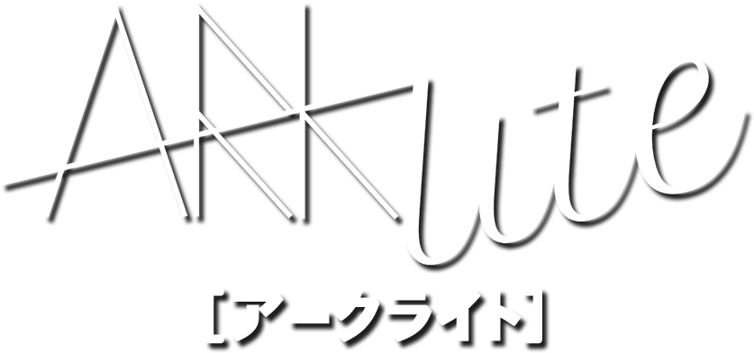

<canvas id="sequencerCanvas"></canvas>
<div id="dim"></div>

{% for video in site.data.featured %}
{% if video.show_on_homepage %}
<div id="new" class="text-center fade-in-left">
    <div class="sb"></div>
    <span class="blinking text-secondary">New Release:</span>
    <div class="thumbnail bottom-0">
        <a href="{{ video.link }}" target="_blank" class="thumbnail-btn">
            
            <div class="preview">
                <p><b>{{ video.homepage_preview }}</b></p>
            </div>
        </a>
    </div>
</div>
{% endif %}
{% endfor %}

<div class="centered-wrapper text-center fade-in">
    <div class="logodiv">
        
        <div id="dot-shadow">
            <div class="rotate" id="dot" onclick="showSequencer()">
                <!-- <div id="dot-inner"></div> -->
            </div>
        </div>
    </div>

    <h3 class="title text-light colored-shadow">Artist / Music Producer</h3>

    <nav class="navbar navbar-expand">
        <div class="container">
            <div class="collapse navbar-collapse justify-content-center" id="mynavbar">
                <ul class="nav justify-content-center">
                    {% include navlinks.html %}
                </ul>
            </div>
        </div>
    </nav>
    <div class="music-btn-shadow">
        <a href="/music">
            <button id="music-btn" class="btn btn-outline-light">
                <h4>Music »</h4>
            </button>
        </a>
    </div>
</div>

<script src="js/phaser.min.js"></script>
<script>
    const dot = document.getElementById('dot');
    const dim = document.getElementById('dim');

    const volume = .25;

    const sequencerCanvas = document.getElementById('sequencerCanvas');
    const states = {
        hidden: 0,
        growing: 1,
        shown: 2,
        shrinking: 3
    }
    const numPages = 4;
    const tempo = 150;

    // old sizes and colors (red, black, white, and grey logo)
    // const size = 1000;
    // const margin = 120;
    // const innerSize = size - margin * 2;
    // const interval = innerSize / 8;
    // const shapeScale = .9;
    // const scaledInterval = interval * shapeScale;
    // const colors = {
    //     white: 0xffffff,
    //     bg: 0xf70029,
    //     border: 0xc1c2c4,
    //     cover: 0x282828,
    //     off: 0x282828,
    //     playhead: 0xc1c2c4,
    //     on: 0xdfffff,
    // }

    // new sizes and colors (white and burgundy logo)
    const size = 1000;
    const margin = 60;
    const innerSize = size - margin * 2;
    const interval = innerSize / 8;
    const shapeScale = .9;
    const scaledInterval = interval * shapeScale;
    const colors = {
        white: 0xffffff,
        bg: 0xffffff,
        border: 0xffffff,
        cover: 0xffffff,
        off: 0xdddddd,
        playhead: 0xbbbbbb,
        on: 0x999999,
    }

    var state = states.hidden;
    var showTween;
    var nodes = [];

    window.addEventListener('resize', function () {
        if (showTween && showTween.isPlaying() && state == states.growing) {
            var center = getCenterValues();

            showTween.updateTo('angle', center.angle);
            showTween.updateTo('top', center.top);
            showTween.updateTo('left', center.left);
            showTween.updateTo('width', center.width);
            showTween.updateTo('height', center.height);
        } else if (state == states.shown) {
            var style = game.canvas.style;
            var center = getCenterValues();

            style.transform = 'rotate(' + center.angle + 'deg)';
            style.top = center.top + 'px';
            style.left = center.left + 'px';
            style.width = center.width + 'px';
            style.height = center.height + 'px';

            game.scale.refresh();
        }
    });

    window.addEventListener('scroll', function () {
        if (state == states.shown)
            game.scale.refresh();
    });

    function getCanvasDotValues() {
        var values = window.getComputedStyle(dot, null).getPropertyValue("transform").split('(')[1].split(')')[0].split(',');
        var a = values[0];
        var b = values[1];
        var angle = Math.round(Math.atan2(b, a) * (180 / Math.PI));

        var dotRect = dot.getBoundingClientRect();

        var offset = Math.min(
            Math.abs(Math.sin(angle * Math.PI / 180)),
            Math.abs(Math.cos(angle * Math.PI / 180))
        );

        offset /= Math.sqrt(2) / 2;
        offset *= parseInt($(dot).css('width').slice(0, -2)) / 4;

        return {
            top: (dotRect.top + offset),
            left: (dotRect.left + offset),
            angle: angle,
            width: parseInt($(dot).css('width').slice(0, -2)) * 1.4,
            height: parseInt($(dot).css('height').slice(0, -2)) * 1.4,
        }
    }

    function getCenterValues(params) {
        if (window.innerWidth < window.innerHeight) {
            var canvasMargin = (window.innerHeight - window.innerWidth) / 2;
            return {
                angle: 360 * 2,
                left: 0,
                top: canvasMargin,
                width: window.innerWidth,
                height: window.innerWidth
            }
        } else {
            var canvasMargin = (window.innerWidth - window.innerHeight) / 2;
            return {
                angle: 360 * 2,
                left: canvasMargin,
                top: 0,
                width: window.innerHeight,
                height: window.innerHeight
            }
        }
    }

    function showSequencer() {
        var scene = game.scene.getScene('sequencerScene');
        var style = scene.game.canvas.style;

        // get dot position
        var tweenFrom = getCanvasDotValues();

        // set canvas to dot position
        style.transform = 'rotate(' + tweenFrom.angle + 'deg)';
        style.top = tweenFrom.top + 'px';
        style.left = tweenFrom.left + 'px';
        style.width = tweenFrom.width + 'px';
        style.height = tweenFrom.height + 'px';

        // get center position
        var tweenTo = getCenterValues();

        showTween = scene.tweens.add({
            targets: tweenFrom,
            angle: tweenTo.angle,
            top: tweenTo.top,
            left: tweenTo.left,
            width: tweenTo.width,
            height: tweenTo.height,
            ease: 'Quad.InOut',
            duration: 3000,
            onUpdate: function (tween, target) {
                style.transform = 'rotate(' + target.angle + 'deg)';
                style.left = target.left + 'px';
                style.top = target.top + 'px';
                style.width = target.width + 'px';
                style.height = target.height + 'px';
            },
            onComplete: function () {
                scene.input.enabled = true;
                scene.setPaused(false);
                game.scale.refresh();
                state = states.shown;
                dim.onclick = hideSequencer;

            },
        });

        scene.tweens.add({
            targets: scene.cover,
            alpha: 0,
            delay: 1000,
            duration: 1500
        });

        style.opacity = '1';
        style['z-index'] = 100;
        state = states.growing;
        dot.style.opacity = '0';
        dot.onclick = null;

        scene.erasePlayHead();
        scene.step = 8 * numPages - 1;

        dim.style.opacity = '.5';
        dim.style['z-index'] = 90;

        dot.classList.remove('rotate');
    }

    function hideSequencer() {
        dot.classList.add('rotate');

        state = states.shrinking;
        var scene = game.scene.getScene('sequencerScene');
        var style = scene.game.canvas.style;

        // get center position
        var tweenFrom = getCenterValues();
        tweenFrom.angle = -360;

        // get dot position
        var tweenTo = getCanvasDotValues();

        showTween = scene.tweens.add({
            targets: tweenFrom,
            angle: tweenTo.angle,
            top: tweenTo.top,
            left: tweenTo.left,
            width: tweenTo.width,
            height: tweenTo.height,
            ease: 'Quad.InOut',
            duration: 3000,
            onUpdate: function (tween, target) {
                var dotPos = getCanvasDotValues();

                showTween.updateTo('angle', dotPos.angle);
                showTween.updateTo('top', dotPos.top);
                showTween.updateTo('left', dotPos.left);
                showTween.updateTo('width', dotPos.width);
                showTween.updateTo('height', dotPos.height);

                style.transform = 'rotate(' + target.angle + 'deg)';
                style.left = target.left + 'px';
                style.top = target.top + 'px';
                style.width = target.width + 'px';
                style.height = target.height + 'px';
            },
            onComplete: function () {
                game.scale.refresh();
                style.opacity = '0';
                style['z-index'] = -100;
                state = states.hidden;
                dot.style.opacity = '1';
                dim.style['z-index'] = -90;

                dot.onclick = showSequencer;
            },
        });

        scene.tweens.add({
            targets: scene.cover,
            alpha: 1,
            duration: 1500
        });

        state = states.shrinking;
        scene.input.enabled = false;
        scene.setPaused(true);
        scene.erasePlayHead();

        dim.style.opacity = '0';
        dim.onclick = null;
    }

    function load() {
        try {
            var playStates = JSON.parse(window.localStorage.getItem('pattern'));
            if (!Array.isArray(playStates)) throw "Invalid Pattern";

            for (var p = 0; p < numPages; p++) {
                for (var i = 0; i < 8; i++) {
                    for (var j = 0; j < 7; j++) {
                        var state = playStates[(p * 8) + i][j];

                        if (typeof state !== "boolean")
                            throw "Invalid Pattern"

                        var node = nodes[(p * 8) + i][j];

                        node.play = state;
                        node.setTint(state ? colors.on : colors.off);
                    }
                }
            }

        } catch (err) {
            for (var p = 0; p < numPages; p++) {
                for (var i = 0; i < 8; i++) {
                    for (var j = 0; j < 7; j++) {
                        var node = nodes[(p * 8) + i][j];
                        node.play = false;
                        node.setTint(colors.off);
                    }
                }
            }
        }
    }

    function save() {
        var playStates = [];
        for (var p = 0; p < numPages; p++) {
            for (var i = 0; i < 8; i++) {
                playStates[(p * 8) + i] = [];
                for (var j = 0; j < 7; j++) {
                    playStates[(p * 8) + i][j] = nodes[(p * 8) + i][j].play;
                }
            }
        }
        window.localStorage.removeItem('pattern');
        window.localStorage.setItem('pattern', JSON.stringify(playStates));
    }

    var sequencerScene = new Phaser.Class({
        Extends: Phaser.Scene,
        initialize: function () {
            Phaser.Scene.call(this, { key: 'sequencerScene' });
        },
        preload: function () {
            this.load.audio('0', 'audio/kick.mp3');
            this.load.audio('1', 'audio/snare.mp3');
            this.load.audio('2', 'audio/hat.mp3');
            this.load.audio('3', 'audio/open.mp3');
            this.load.audio('4', 'audio/crash.mp3');
            this.load.audio('5', 'audio/perc.mp3');
            this.load.audio('6', 'audio/ahh.mp3');
        },
        create: function () {
            this.input.enabled = false;
            this.sound.pauseOnBlur = false;
            this.sound.volume = volume;

            this.cameras.main.setViewport(0, 0, size, size);
            this.cameras.main.setBackgroundColor(colors.bg);

            this.add.graphics({
                fillStyle: { color: colors.white },
            })
                .setVisible(false)
                .fillRect(0, 0, scaledInterval, scaledInterval)
                .generateTexture('square', scaledInterval, scaledInterval)
                .clear()
                .fillTriangle(0, scaledInterval / 2, scaledInterval, scaledInterval / 2, scaledInterval / 2, 0)
                .fillRect(scaledInterval * .2, scaledInterval * .4, scaledInterval * .6, scaledInterval * .6)
                .generateTexture('arrow', scaledInterval, scaledInterval)
                .clear()
                .fillTriangle(0, 0, 0, scaledInterval, scaledInterval / 2 * Math.sqrt(3), scaledInterval / 2)
                .generateTexture('play', scaledInterval / 2 * Math.sqrt(3), scaledInterval)
                .clear()
                .fillRect(0, 0, scaledInterval * .4, scaledInterval)
                .fillRect(scaledInterval * .6, 0, scaledInterval * .4, scaledInterval)
                .generateTexture('pause', scaledInterval, scaledInterval)
                .clear()
                .fillRect(scaledInterval * .4, 0, scaledInterval * .2, scaledInterval)
                .fillRect(0, scaledInterval * .4, scaledInterval, scaledInterval * .2)
                .generateTexture('quit', scaledInterval, scaledInterval)
                .clear()
                .fillRect(scaledInterval * .1, scaledInterval * .1, scaledInterval * .8, scaledInterval * .1)
                .fillRect(scaledInterval * .4, 0, scaledInterval * .2, scaledInterval * .2)
                .fillRect(scaledInterval * .2, scaledInterval * .1, scaledInterval * .125, scaledInterval * .9)
                .fillRect(scaledInterval * (.2 + .165), scaledInterval * .1, scaledInterval * .125, scaledInterval * .9)
                .fillRect(scaledInterval * (.7 - .165), scaledInterval * .1, scaledInterval * .125, scaledInterval * .9)
                .fillRect(scaledInterval * .7, scaledInterval * .1, scaledInterval * .125, scaledInterval * .9)
                .fillRect(scaledInterval * .2, scaledInterval * .2, scaledInterval * .6, scaledInterval * .1)
                .fillRect(scaledInterval * .2, scaledInterval * .9, scaledInterval * .6, scaledInterval * .1)
                .generateTexture('trash', scaledInterval, scaledInterval)
                .clear()
                .fillStyle(colors.cover)
                .fillRect(0, 0, innerSize, innerSize)
                .generateTexture('cover', innerSize, innerSize)
                .clear()
                .fillStyle(colors.border)
                .fillRect(0, 0, margin / 2, size)
                .fillRect(0, 0, size, margin / 2)
                .fillRect(size - margin / 2, 0, margin / 2, size)
                .fillRect(0, size - margin / 2, size, margin / 2)
                .generateTexture('border', size, size)
                .clear();

            this.add.image(0, 0, 'border').setOrigin(0, 0).setDepth(10).setScrollFactor(0);
            this.cover = this.add.image(size / 2, size / 2, 'cover').setDepth(10).setScrollFactor(0);

            for (var p = 0; p < numPages; p++) {
                for (var i = 0; i < 8; i++) {
                    nodes[(p * 8) + i] = [];
                    for (var j = 0; j < 7; j++) {
                        let node = this.add.image(size * p + margin + interval / 2 + interval * i, margin + interval / 2 + interval * j, 'square').setTint(colors.off);
                        node.play = false;
                        node.position = (p * 8) + i;
                        node.setInteractive({ useHandCursor: true }).on('pointerdown', function () {
                            node.play = !node.play;
                            node.setTint(node.play ? colors.on : this.step == node.position ? colors.playhead : colors.off);
                            save();
                        }, this);
                        nodes[(p * 8) + i][j] = node;
                    }
                }
            }

            load();

            var page = 0;
            var arrowLeft = this.add.image(margin + interval / 2 + interval * 2, margin + interval / 2 + interval * 7, 'arrow')
                .setTint(colors.off).setAngle(270).setScrollFactor(0).setInteractive({ useHandCursor: true }).on('pointerdown', function () {
                    page--;
                    if (page < 0)
                        page = numPages - 1;
                    this.scrollTo(page);
                    this.highlight(arrowLeft);
                }, this);
            var arrowRight = this.add.image(margin + interval / 2 + interval * 5, margin + interval / 2 + interval * 7, 'arrow')
                .setTint(colors.off).setAngle(90).setScrollFactor(0).setInteractive({ useHandCursor: true }).on('pointerdown', function () {
                    page++;
                    if (page > numPages - 1)
                        page = 0;
                    this.scrollTo(page);
                    this.highlight(arrowRight);
                }, this);

            this.pause = this.add.image(size / 2, margin + interval / 2 + interval * 7, 'play')
                .setTint(colors.off).setScrollFactor(0).setInteractive({ useHandCursor: true }).on('pointerdown', function () {
                    this.setPaused(null, true);
                    this.highlight(this.pause);
                }, this);

            var quit = this.add.image(margin + interval / 2, margin + interval / 2 + interval * 7, 'quit')
                .setTint(colors.off).setAngle(45).setScrollFactor(0).setInteractive({ useHandCursor: true }).on('pointerdown', function () {
                    hideSequencer();
                    this.highlight(quit);
                }, this);

            var trash = this.add.image(margin + interval / 2 + interval * 7, margin + interval / 2 + interval * 7, 'trash')
                .setTint(colors.off).setScrollFactor(0).setInteractive({ useHandCursor: true }).on('pointerdown', function () {
                    for (var p = 0; p < numPages; p++) {
                        for (var i = 0; i < 8; i++) {
                            for (var j = 0; j < 7; j++) {
                                var node = nodes[(p * 8) + i][j];
                                node.play = false;
                                if (node.position == this.step)
                                    node.setTint(colors.playhead);
                                else
                                    node.setTint(colors.off);
                            }
                        }
                    }
                    save();
                    this.highlight(trash);
                }, this);

            this.step = 8 * numPages - 1;
            this.timerStep = this.time.addEvent({
                delay: tempo,
                repeat: -1,
                paused: true,
                callback: function () {
                    this.erasePlayHead();
                    this.step++;
                    this.step %= 8 * numPages;
                    for (var i = 0; i < 7; i++) {
                        var node = nodes[this.step][i];
                        if (node.play) {
                            if (i == 2 || i == 3)
                                this.sound.stopByKey(3);
                            this.sound.play(i);
                            node.setScale(1.2);
                        } else {
                            node.setTint(colors.playhead);
                        }
                    }
                },
                callbackScope: this,
            });
        },
        erasePlayHead: function () {
            for (var i = 0; i < 7; i++) {
                var node = nodes[this.step][i];
                if (!node.play) {
                    node.setTint(colors.off);
                }
                node.setScale(1);
            }
        },
        scrollTo: function (page) {
            this.input.enabled = false;
            this.tweens.add({
                targets: this.cameras.main,
                scrollX: size * page,
                ease: 'Sine.easeInOut',
                duration: 500,
                onComplete: function () {
                    this.input.enabled = true;
                },
                onCompleteScope: this,
            });
        },
        highlight: function (element) {
            element.setTint(colors.on);
            this.time.delayedCall(100, function () {
                element.setTint(colors.off);
            }, null, this);
        },
        setPaused: function (pause, toggle) {
            if (toggle) {
                this.timerStep.paused = !this.timerStep.paused;
            } else {
                this.timerStep.paused = pause;
            }
            for (var i = 0; i < 7; i++) {
                nodes[this.step][i].setScale(1);
            }
            this.pause.setTexture(this.timerStep.paused ? 'play' : 'pause');
        }
    });

    var game = new Phaser.Game({
        type: Phaser.WEBGL,
        width: size,
        height: size,
        banner: { hidePhaser: true },
        scene: sequencerScene,
        canvas: sequencerCanvas
    });
</script>